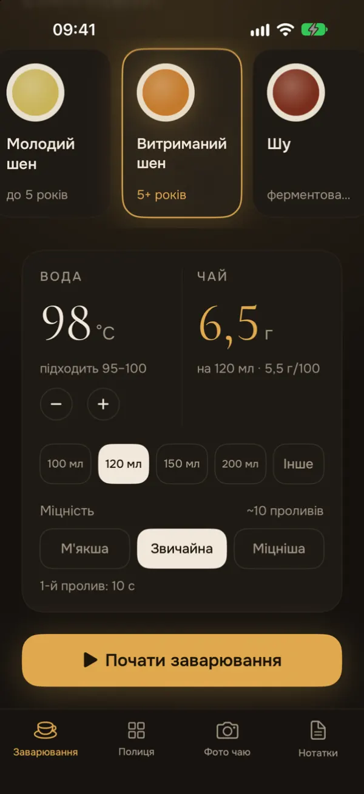
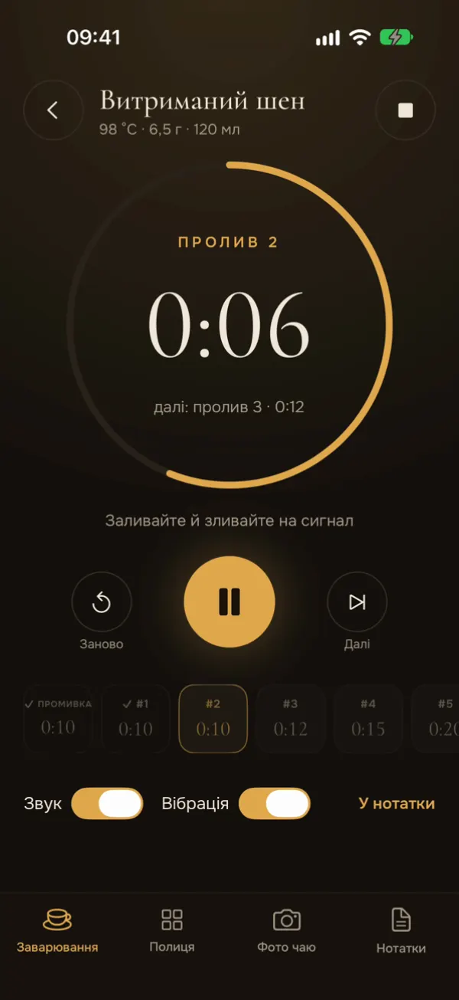
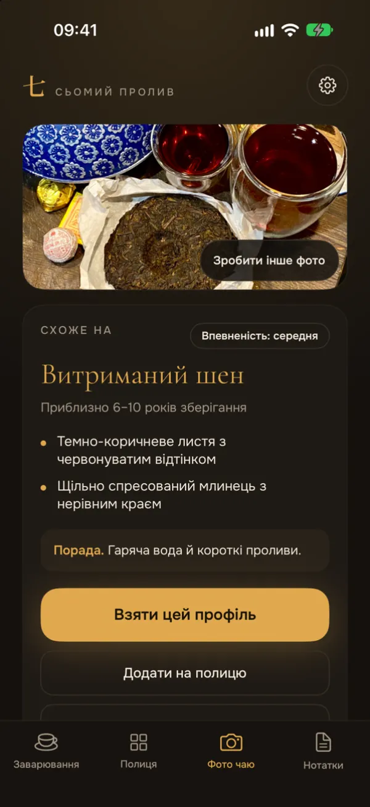
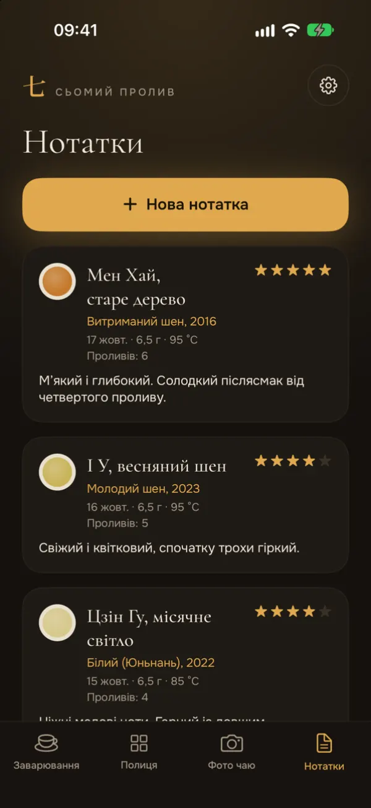

Грами й температура
Оберіть чай і посудину. Застосунок порахує грами листя й покаже температуру води.
Гунфу-таймер для чаю
«Сьомий пролив» підкаже грами листя й температуру води для вашого чаю та посудини, а потім відміряє промивку і кожен пролив.
Безкоштовно. Plus — за бажанням, якщо потрібно більше розпізнавань за фото.

Що вміє застосунок
Зроблено для вечірніх чаювань: темний екран, великі цифри, нічого зайвого.

Оберіть чай і посудину. Застосунок порахує грами листя й покаже температуру води.
Круговий таймер веде промивку і кожен пролив. Дзвоник і вібрація підкажуть, коли зливати.

Зробіть від одного до трьох фото чаю чи обгортки. Результат — це оцінка, а не гарантія.

Ведіть полицю своїх чаїв і записуйте кожне заварювання. Полиця й нотатки лишаються на вашому телефоні.
Гортайте вбік, щоб побачити інші екрани.
П'ять чаїв
Застосунок стартує з цих чисел. Температуру, посудину й міцність можна змінити. Натисніть на чай із гайдом, щоб прочитати більше.
Таймер, полиця й нотатки безкоштовні. Щомісяця є кілька безкоштовних розпізнавань за фото.
Необов'язкова підписка, яка дає більше розпізнавань за фото. Ціну й ліміти застосунок показує до покупки.
Без акаунтів, реклами й стеження. Фото надсилаються до сервісу ШІ лише після вашої згоди. Політика приватності.
Українською, англійською, спрощеною і традиційною китайською.